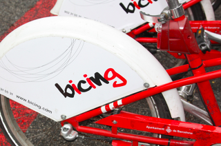

Bicing Sitges is a new project with collaboration of a company of Barcelona to make use of the bicycle a more natural , more comfortable than going to move by car and respectful nature.
This initiative bicing in Sitges we offer are different types of bicycle ( available Products ) , different routes optional if you want to make the routes already designed ( available Routes and , of course, of four different sites rent bikes scattered in different parts of the city of Sitges ( available Location ) . If you want to know more, please contact us with different methods that we offer Contact .
